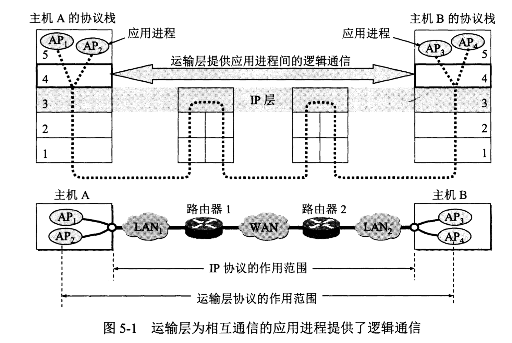
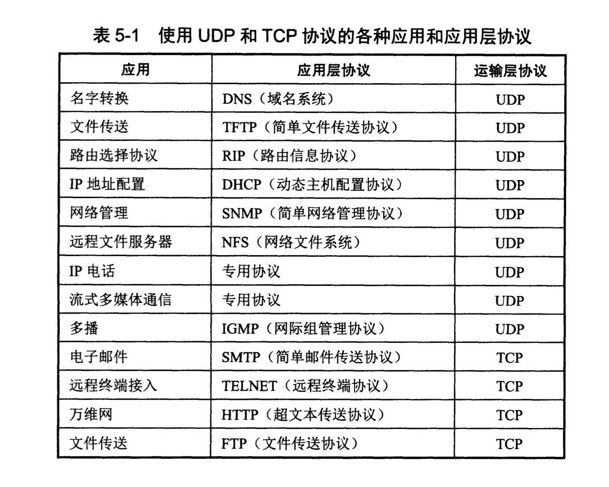

运输层协议概述
运输层的主要任务
网络层为主机之间提供逻辑通信，而运输层为应用进程之间提供端到端的逻辑通信。

如图，运输层的通信好像就是沿水平方向直接传送数据。但事实上这两个运输层之间并没有一条水平方向的物理连接。数据的传送是沿着图中的虚线方向（经过多个层次）传送的。逻辑通信的意思是“好像是这样通信，但事实上并非真的这样通信”。
运输层的功能
- 运输层还要对收到的报文进行差错检测。在网络层中，IP数据报首部中的检验和字段，只检验首部是否出现差错。
- 运输层向高层用户屏蔽了下面网络核心的细节。
- 复用和分用应用层所有的应用进程都可以通过运输层再传送到IP层（网络层），这就是复用。运输层从IP层收到发给各应用进程的数据后，必须分别交付指明的各应用进程，这就是分用。
运输层的两个主要协议
| 用户数据报协议UDP(User Datagram Protocol) | 传输控制协议TCP(Transmission Control Protocol) | |
|---|---|---|
| 数据单元 | UDP用户数据报 | TCP报文段(segment) |
| 传输方式 | 在传送数据之前不需要建立连接 | 提供面向连接的服务 |
| 可靠性 | 不可靠的 | 可靠的 |
应用场景：

运输层中端口的概念
端口就是对进程标识符进行“统一度量衡”操作。 要解决的问题： 为了实现运输层复用和分用的功能功能，我们必须对应用层的每个应用进程赋予一个非常明确的标志。 遇到的困难： 1. 我们知道，在单个计算机中的进程是用进程标识符（一个不大的整数）来标志的。但是在互联网环境下，计算机的操作系统不同，不同的操作系统又使用不同格式的进程标识符。 2. 把特定机器上运行的特定进程指明为通信的最后终点是不可行的。因为进程的创建和撤销都是动态的。
解决问题的方法： 运输层使用协议端口号(Protocol port number)，或简称端口(port)。虽然通信的终点是应用进程，但只要把所传送的报文交到目的主机的某个合适端口，剩下的工作就由TCP或UDP来完成。此处的端口指软件端口。TCP/IP的运输层用一个16位端口号来标志一个端口。端口号只具有本地意义，它只是为了标志本计算机应用层中的各个进程在和运输层交互时的层间接口。 >硬件端口：不同硬件设备进行交互的接口。 >软件端口：应用层的各种协议进程与运输实体进行层间交互的一种地址。
运输层端口号的分类: 1. 服务器端使用的端口号 1. 熟知端口号(well-known port number)或系统端口号，数值为0~1023。这些端口号指派给了TCP/IP最重要的一些应用程序。如下图。 2. 登记端口号。数值为1024~49151。使用这类端口号必须在IANA登记，以防止重复。 2. 客户端使用的端口号 数值为49152~65535。这类端口号仅在客户进程运行时才动态选择，因此又叫做短暂端口号。
| 应用程序 | FTP | TELNET | SMTP | DNS | TFTP | HTTP | SNMP | SNMP(trap) | HTTPS |
|---|---|---|---|---|---|---|---|---|---|
| 熟知端口号 | 21 | 23 | 25 | 53 | 69 | 80 | 161 | 162 | 443 |
参考文献：《计算机网络（第7版）》谢希仁著。